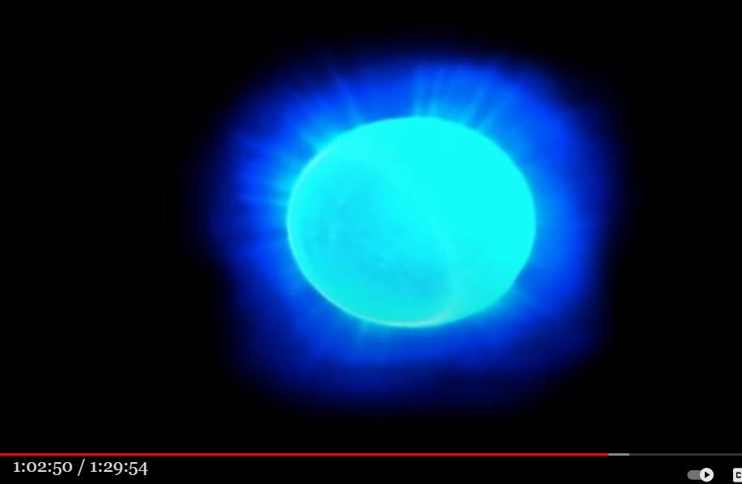

Hypothesis: The "blue light" associated with UFO/ET/Bigfoot encounters is probably an atmospheric luminous phenomenon caused by a strong electric field.

Introduction
- Reports of "blue light" sightings associated with UFO/ET/Bigfoot encounters are very common. - Linda Moulton Howe reports that "blue light" sightings are also reported frequently in "cattle mutilation" incidents.Blue light" (= luminous phenomenon in the atmosphere caused by a strong electric field) → induces false experiences
- In a previous article (see below), I have discussed a hypothesis regarding the relationship between flashing lights and UFOs, and it can be interpreted that the higher energy level of this flashing light is the "blue light". - The higher energy level of the "blue light" makes the induced false experiences more puzzling and unbelievable. For example, the ETs in the subsequent articles were dressed up as wolf heads, or the military dressed up as werewolves.→ The byproduct of a strong electric field (*2) with a unique pattern may be the flash light. ref: Missing-411 case: why can't a police dog track the scent of a missing victim? (2021-12-14) In other words, a strong electric field may have caused the flashing light, or a disturbance of the brain's nerve impulses may have caused the sensation of flashing light. - Furthermore, this electric field may have disturbed the nerve impulses in the brain of a person in the vicinity, causing a simulated UFO/ET experience. In other words, the UFO/ET he saw may have been a false experience (*1) that was interpreted and generated after the fact by the disturbance of his consciousness caused by the nerve impulses in his brain. ref: 1975-02-14, UFO/ET disappears with flashing lights on Reunion Island (2022-01-04)- Quantitative evaluation of electric field generation by piezoelectric effect in granite... paper is below. - Why are CE-5 organizers and participants holding their invocation ceremonies in the Mt. Shesta and at the base of Mt. Adams (where James Gilliland's ECETI ranch is located)? - The answer may be that "atmospheric luminous phenomena" (= orb) occur frequently in such places, and people misidentify them as UFOs, as described in the paper below. - The same disturbance of nerve impulses may explain the ET sighting by Paola Harris and the telepathic reception by the "antennae".Mechanism of Surface Charge Generation during Earthquakes According to the data obtained so far, 0.1 mV/m at 1 Gal at the observation points. Therefore, the electric field at the epicenter is 0.1 mV/m. If all the source faults are granite, the resistivity ρ= 10e6 ohmm would be 10e2 V/m. The above is the underground electric field, but let us evaluate the atmospheric electric field above the ground surface. When the electric charge appears on the ground surface by the underground electric field due to the flow potential, the atmospheric electric field is about 8 times larger than the earth electric field, because the relative permittivity of granite is about 8. Since the atmospheric electric field under clear sky is several hundred V/m, it is possible that the electric field is two orders of magnitude larger than the atmospheric electric field. Under normal conditions, atmospheric luminous phenomena are not atmospheric dielectric breakdown phenomena like lightning (breakdown voltage of 3 MV/m), but partial atmospheric discharges (corona discharges), and weak discharges may occur in areas where the electric field is concentrated. Therefore, if the resistivity around the epicenter is very high, such as in granite, an atmospheric emission phenomenon in the region where the electric field is concentrated is considered.ref: Mysterious Missing Cases and Inclement Weather (Part 4) (2021-09-01)
ref: https://www.jstage.jst.go.jp/article/ieejeiss1987/117/10/117_10_1535/_pdf
Past articles related to "blue light"
Many cases of "blue light" or "blue orb" occurring prior to abduction (2022-01-13)- Two guards at a nuclear missile base were traveling on the highway in a truck when they came upon a broken down vehicle. As one of the guards approached the disabled vehicle, a blue light fell on him from above. The guard in the truck also saw the scene. The two guards' memories were interrupted there. - The guard approaching the disabled vehicle regained consciousness a few miles away over a field. His shoes and gun were gone. He walked barefoot to a nearby store and from the store contacted base. ref: Fall 1973, South Dakota: Guard at nuclear missile base abducted (en route: Part 1) (2013-10-25)- Shane Elam's experience occurred in September or October 2010. Late that evening, he was working at his computer when he heard a thud nearby. When he turned around in the direction he heard the sound, his body went rigid. - My vision was enveloped in a white light. I was inside the fuzzy, opaque light. Then a blue spark of electricity extended outward from the center of my vision. It was like a cold flame. - I knew with my mind's eye that I was inside something. I was enveloped in a sense of perfect peace. I was connected to something. A sense of warmth surged through me. It was almost as if it had substance--warm, soft, liquid--encircling my body. - I felt myself floating a little. It was something I had never experienced before. ref: Oklahoma, September-October 2010: One man's mystical experience (2012-11-06)- The center of the object was surrounded by a ring of small multiple blue lights. Then, periodically over a period of several minutes, flames blew out from the bottom of the object, and the jets of flame formed a large cone on the outside. Each time, when the jet disappeared, the UFO descended several feet toward the road below. But when the flame jet was released, it rose again for the same distance. ref: December 29, 1980, Texas: Diamond-Shaped Giant UFO Witnesses Suffer Radiation Damage (2012-07-14)- After a while, I was startled to hear a loud buzzing sound coming from outside. Thinking it strange, I got out of bed and looked around. Suddenly, I felt warm and comforted when a bright blue light hit my face. I have no idea what happened immediately after that. ref: The White Room: stories of abduction experiences (2011-08-01)Talking to Hopkins brought back another experience to Strieber. In this one, the Striebers were at their cabin, with Jacques Sandulescu and Annie Gottlieb. During the night he "...Startled awake and saw, to my horror, that there was a distinct blue light being cast on the living room ceiling...I watched this blue light slowly creep up the ceiling...I fell back to sleep...I was again wakened this time by a loud report...I was stunned to see that the entire house was surrounded by a glow that extended into the fog...the glow suddenly disappeared...The next morning little was said about the incident." (p.45.) Later Strieber questioned his wife; Sandulescu and Gottlieb about the event, and underwent regression hypnosis where more detailed memories of the event were recovered. ref: Whitley Strieber's abduction experience (2021-01-17)Brent Raynes : Experience of blue light or blue vision (2020-07-12)- William Konkolesky's experience has recently been described in previous articles below. abductee's testimony: ET's large black eyes turned blue and emitted a blue light ref: William Konkolesky : Experienced time loops and time travel due to ET interference (2020-01-14)(2022-01-22: Article created on January 22, 2022)Original article
【編】仮説：UFO/ET/Bigfoot 遭遇に伴う「青い光」の正体は、強電界による大気中の発光現象 (2022-01-22)
Thanks
Translated with www.DeepL.com/Translator (free version) (2022-04-13 : Translation)